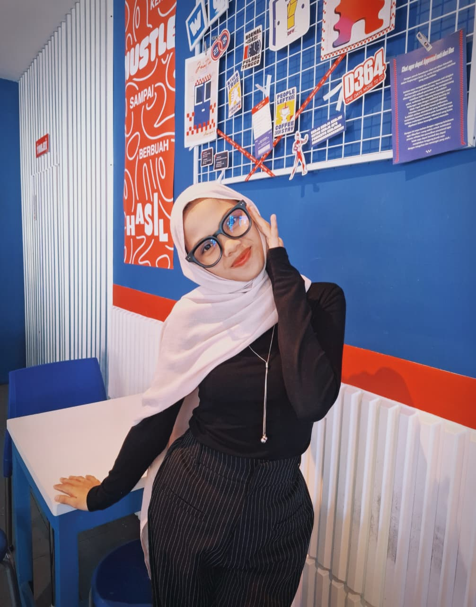

Sukses dunia akhirat
Saya sedang belajar HTML dan ingin membangun web yang terstruktur.
Keahlian
- Canva
- Excel
- Word
Kunjungi Instagram untuk melihat lebih banyak tentang saya.

Riwayat Pendidikan
| Tahun | Institusi | Jurusan |
|---|---|---|
| 2025-sekarang | Universitas Muhammaddiyah Kalimantan Timur | Teknik Informatika |
| 2022-2025 | SMK 14 Samarinda | Akuntansi |